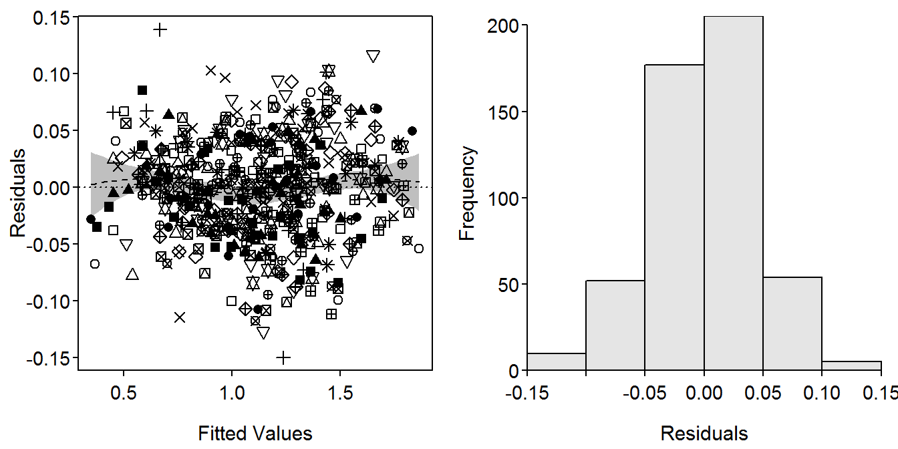

Dummy variable regression (DVR) was introduced in Chapter 7 of Introductory Fisheries Analyses with R in the context of determining if the slope and y-intercept parameters of weight-length relationship regressions differed between fish captured in two different years. That analysis may be extended to more than two groups, though more dummy variables are required and special methods are needed to determine which pairs of groups (if any) differ. This supplement demonstrates how to extend the DVR to more than two groups.
Functions used in this supplement require the packages shown below.
> library(FSA)
> library(dplyr)
> library(car)Weights (g) and total lengths (mm) from Ruffe (Gymnocephalus cernuus) captured in the St. Louis River Harbor (Minnesota and Wisconsin) were used in Chapter 7 and will also be used in this supplement. These data are from Ogle and Winfield (2009) and are in RuffeSLRH.csv. To eliminate within-season variability, only Ruffe captured in July are used here. Additionally, a factored version of year was created, the common logarithms of weight and length were created, and the fishID, month, and day variables were removed to save space in the output.
> ruf <- read.csv("RuffeSLRH.csv") %>%
filterD(month==7) %>%
mutate(fYear=factor(year),logW=log10(wt),logL=log10(tl)) %>%
select(-fishID,-month,-day)
> headtail(ruf) year tl wt fYear logW logL
1 1988 78 6.0 1988 0.7781513 1.892095
2 1988 81 7.0 1988 0.8450980 1.908485
3 1988 82 7.0 1988 0.8450980 1.913814
1936 2004 137 28.0 2004 1.4471580 2.136721
1937 2004 143 31.4 2004 1.4969296 2.155336
1938 2004 174 82.4 2004 1.9159272 2.240549For the first example below, only fish from 1990, 1995, and 2000 were examined. In the second example below, fish from 1992 to 1995 were examined.
> ruf1 <- filterD(ruf,year %in% c(1990,1995,2000))
> ruf2 <- filterD(ruf,year %in% 1992:1995)The number of dummy variables required to represent \(k\) groups is \(k-1\). Thus, in Chapter 7, only one dummy variable was required to represent the two groups. In this example, three groups (the years) are being examined and, thus, two dummy variables are needed. For example, lm() will ultimately treat the “1990” group as the reference group and create two dummy variables as follows
\[ fYear1995 = \left\{\begin{array}{l} 1 \text{, if captured in 1995 }\\ 0 \text{, if NOT captured in 1995 } \end{array} \right. \]
\[ fYear2000 = \left\{\begin{array}{l} 1 \text{, if captured in 2000 }\\ 0 \text{, if NOT captured in 2000 } \end{array} \right. \]
These dummy variables are each combined with the \(log_{10}(L)\) covariate to construct the following ultimate full model
\[ \begin{split} log_{10}(W_{i}) &= log_{10}(\alpha) + \beta log_{10}(L_{i}) \\ &\mspace{16mu}+ \delta_{1} fYear1995 + \delta_{2} fYear2000 \\ &\mspace{16mu}+ \gamma_{1} fYear1995*log_{10}(L_{i})+ \gamma_{2} fYear2000*log_{10}(L_{i}) + \epsilon_{i}\quad \quad \quad \quad \text{(1)} \end{split} \]
Substitution of appropriate values for the dummy variables into Equation 1 shows how Equation 1 simultaneously represents the weight-length relationship regressions for all three years (Table 1). From these submodels, it is apparent that \(\alpha\) is the y-intercept for the reference (e.g., 1990) group, \(\beta\) is the slope for the reference group, \(\delta_{i}\) is the difference in y-intercepts between the \(i\)th and reference groups, and \(\gamma_{i}\) is the difference in slopes between the \(i\)th and reference groups. By extension, the interaction variables measure differences in slopes and the dummy variables measure differences in y-intercepts.
Table 1: The submodels by capture year represented by the full model.
| Year | fYear1995 | fYear2000 | Submodel (\(log_{10}(W_{i})=\)) |
|---|---|---|---|
| 1990 | 0 | 0 | \(log_{10}(\alpha) + \beta log_{10}(L_{i})\) |
| 1995 | 1 | 0 | \((log_{10}(\alpha) + \delta_{1}) + (\beta + \gamma_{1})*log_{10}(L_{i})\) |
| 2000 | 0 | 1 | \((log_{10}(\alpha) + \delta_{2}) + (\beta + \gamma_{2})*log_{10}(L_{i})\) |
The model in Equation 1 is fit with lm() using a formula of the form y~x*factor exactly as described in Chapter 7 (again noting that lm() will create the appropriate dummy and interaction variables).
> fit1 <- lm(logW~logL*fYear,data=ruf1)The linearity and homoscedasticity assumptions (Figure 1-Left) and normality assumption (Figure 1-Right) are largely met with this model.
> residPlot(fit1,legend=FALSE)
Figure 1: Modified residual plot (Left) and histogram of residuals (Right) from fitting a dummy variable regression to the log-transformed weights and lengths of Ruffe captured in 1990, 1995, and 2000.
An ANOVA table is constructed (using Anova() from car) and interpreted (sequentially starting at the bottom of the table) as described in Chapter 7.
> Anova(fit1)Anova Table (Type II tests)
Response: logW
Sum Sq Df F value Pr(>F)
logL 43.529 1 22278.435 < 2.2e-16
fYear 0.451 2 115.429 < 2.2e-16
logL:fYear 0.052 2 13.395 2.159e-06
Residuals 0.971 497 From these results it is apparent that the interaction term is a significant predictor in the model. In relation to Equation 1 this suggests that at least one of \(\gamma_{1}\) or \(\gamma_{2}\) is significantly different than zero, which implies that the slope of the relationship for fish captured in 1995, 2000, or both differs significantly from the slope for fish captured in 1990. Additionally, it is possible that the slopes for fish captured in 1995 and 2000 also differ, but this cannot be assessed with this model.
The ANOVA table for the fit of the full model is useful for determining if there is some difference in the regression model parameters among groups, but it cannot specifically identify where those differences occur. Specific differences are identified in the next section.
No simple method exists (such as Tukey’s Honestly Significant Difference (HSD) method) for comparing slopes among all pairs of groups while controlling for an increase in experimentwise error due to multiple comparisons. One strategy to perform these tests, though, is to fit the DVR as in the previous section and extract all of the p-values for comparisons of slopes to the reference level. Another model is then fit where the reference level has been changed and all p-values for comparisons of slopes to this level are extracted. This process is repeated until p-values for all pairwise comparisons has been extracted. The set of p-values from these comparisons is then submitted to procedures, such as one of the sequential Bonferroni or false discovery rate procedures, that are designed to adjust a set of p-values for multiple comparisons.
Controlling the experimentwise error rate for multiple comparisons is easily accomplished in R with p.adjust(). However, the sequential resetting of the reference level, fitting a new model, and extracting the p-values from all slope comparisons is tedious, especially for many groups. Fortunately, compSlopes() from FSA automates the tedious computation of the set of p-values and use of p.adjust() to control the experimentwise error rate.
The compSlopes() function requires a DVR model fit with lm() as its first argument. The method to control for multiple comparisons may be set with method= and may be any of the methods returned by p.adjust.methods() (see ?p.adjust).
> compSlopes(fit1)Multiple Slope Comparisons (using the 'holm' adjustment) comparison diff 95% LCI 95% UCI p.unadj p.adj
1 1995-1990 -0.17186 -0.27049 -0.07324 0.00067 0.00134
2 2000-1990 -0.22852 -0.31738 -0.13965 0.00000 0.00000
3 2000-1995 -0.05665 -0.15236 0.03905 0.24538 0.24538
Slope Information (using the 'holm' adjustment) level slopes 95% LCI 95% UCI p.unadj p.adj
3 2000 2.79665 2.73611 2.85719 0 0
2 1995 2.85330 2.77918 2.92743 0 0
1 1990 3.02516 2.96011 3.09022 0 0Two sets of results are returned by compSlopes(). The top set of results shows the difference in slopes (diff), unadjusted confidence interval for the difference in slopes (95% LCI and 95% UCI), and unadjusted (p.unadj) and adjusted (p.adj) p-values for testing that the difference in slopes is not zero. These results show that the slope for 1990 is significantly greater than the slopes for 1995 and 2000, and that the slopes for 1995 and 2000 do not differ significantly.
The bottom set of results shows the slope (slope), unadjusted confidence interval for the slope (95% LCI and 95% UCI), and unadjusted (p.unadj) and adjusted (p.adj) p-values for testing that the slope is not equal to zero. In this case, this output is primarily for completeness as these hypothesis are not generally of interest with weight-length relationship regressions.
A plot that shows the transformed weight-length data with best-fit lines for each year superimposed (Figure 2) is constructed with the code below. This code follows that found in the book with the exception that col2rgbt() from FSA is used to add transparency to each color in a vector of colors.
> ## Base plot
> clrs1 <- c("black","red","blue")
> clrs2 <- col2rgbt(clrs1,1/4)
> plot(logW~logL,data=ruf1,pch=19,col=clrs2[fYear],
xlab="log(Total Length)",ylab="log(Weight)")
> ## Fitted lines
> ( cfs <- coef(fit1) ) (Intercept) logL fYear1995 fYear2000 logL:fYear1995
-4.9144676 3.0251636 0.2817809 0.3942964 -0.1718633
logL:fYear2000
-0.2285159 > minx <- min(ruf1$logL)
> maxx <- max(ruf1$logL)
> curve(cfs[1]+cfs[2]*x,from=minx,to=maxx,col=clrs1[1],lwd=2,add=TRUE)
> curve((cfs[1]+cfs[3])+(cfs[2]+cfs[5])*x,from=minx,to=maxx,col=clrs1[2],lwd=2,add=TRUE)
> curve((cfs[1]+cfs[4])+(cfs[2]+cfs[6])*x,from=minx,to=maxx,col=clrs1[3],lwd=2,add=TRUE)
> ## Add legend
> legend("topleft",levels(ruf1$fYear),pch=19,col=clrs1)Figure 2: Log-transformed weight versus log-transformed length of Ruffe separated by capture year.
When a difference in slopes exists, as in the previous example, it generally does not make sense to compare intercepts. However, if the slopes do not differ, then testing for differences in intercepts becomes important because, with parallel lines (i.e., same slopes), a difference in intercepts implies that the mean value of the response variable differs at every value of the explanatory variable.
The example below fits a DVR of the weight-length relationship regressions for the years from 1992 to 1995 (data.frame constructed above). In this example, the interaction term is not a significant predictor which indicates that none of the slopes differ. However, the term related to the factor variable is significant, which implies that at least one of the \(\delta_{i}\) is different from zero. Thus, the y-intercept for at least of 1993, 1994, or 1995 differs from the y-intercept for 1992 (the reference level).
> fit2 <- lm(logW~logL*fYear,data=ruf2)
> Anova(fit2)Anova Table (Type II tests)
Response: logW
Sum Sq Df F value Pr(>F)
logL 75.798 1 45594.0523 <2e-16
fYear 0.326 3 65.4373 <2e-16
logL:fYear 0.008 3 1.6373 0.1793
Residuals 1.235 743 The same problem of incomplete comparisons and increasing experimentwise error occurs here with the y-intercepts as occurred with the slopes above. The solution, however, is different here because the y-intercept is a point estimate, whereas the slope estimates a rate of change. In this case, Tukey’s HSD method can be used to determine which pairs of y-intercepts differ. However, the observed values need to be adjusted to a single values of the covariate.
The adjusted value for an individual is computed by adding the individual’s residual to the predicted value of the response variable at a common covariate value based on the regression line for that individual. Visually, this adjustment may be thought of as sliding each point along its corresponding regression line to a common value along the x-axis.
The compIntercepts() function from FSA performs these adjustments and applies Tukey’s HSD procedure to the adjusted values. The compIntercepts() function requires the fitted DVR as the first argument. By default, the response variables are are adjusted to the mean value of the covariate unless a value is given to common.cov=. For example, the actual y-intercepts will be used if common.cov=0. Also note that a warning is given if the DVR model contains an interaction term, though compIntercepts() will adjust for this by fitting a new model without the nonsignificant interaction term.
> compIntercepts(fit2)Warning: Removed an interaction term from 'mdl' (i.e., assumed
parallel lines) to test intercepts.Tukey HSD on means adjusted assuming parallel lines comparison diff 95% LCI 95% UCI p.adj
1 1993-1992 -0.0560847608 -0.06723042 -0.044939103 0.0000000
2 1994-1992 -0.0609843518 -0.07392816 -0.048040541 0.0000000
3 1995-1992 -0.0616068456 -0.07461176 -0.048601927 0.0000000
4 1994-1993 -0.0048995910 -0.01528465 0.005485465 0.6176269
5 1995-1993 -0.0055220848 -0.01598321 0.004939036 0.5254957
6 1995-1994 -0.0006224938 -0.01298177 0.011736778 0.9992208
Mean logW when logL=2.012621 1992 1993 1994 1995
1.171924 1.115839 1.110939 1.110317 Two sets of results are returned by compIntercepts(). The top set of results shows the difference in y-intercepts (diff), unadjusted confidence interval for the difference in y-intercepts (95% LCI and 95% UCI), and adjusted (p.adj) p-values for testing that the difference in y-intercepts is not zero. These results show that the y-intercept for 1992 is significantly greater than the y-intercepts for all other years, which did not differ significantly.
The bottom set of results shows the mean value of the response variable at a common value of the covariate for each group. For example, the mean \(log_{10}(W)\) for when \(log_{10}(L)\)=2.012621 for fish captured in 1992 is 1.171924.
> ## Base plot
> clrs1 <- c("black","red","blue","green")
> clrs2 <- col2rgbt(clrs1,1/4)
> plot(logW~logL,data=ruf2,pch=19,col=clrs2[fYear],
xlab="log(Total Length)",ylab="log(Weight)")
> ## Fitted lines
> ( cfs <- coef(fit2) ) (Intercept) logL fYear1993 fYear1994 fYear1995
-4.553035394 2.846025564 -0.197272960 -0.189460113 -0.079651305
logL:fYear1993 logL:fYear1994 logL:fYear1995
0.068720265 0.062584797 0.007274738 > minx <- min(ruf2$logL)
> maxx <- max(ruf2$logL)
> curve(cfs[1]+cfs[2]*x,from=minx,to=maxx,col=clrs1[1],lwd=2,add=TRUE)
> curve((cfs[1]+cfs[3])+(cfs[2]+cfs[6])*x,from=minx,to=maxx,col=clrs1[2],lwd=2,add=TRUE)
> curve((cfs[1]+cfs[4])+(cfs[2]+cfs[7])*x,from=minx,to=maxx,col=clrs1[3],lwd=2,add=TRUE)
> curve((cfs[1]+cfs[5])+(cfs[2]+cfs[8])*x,from=minx,to=maxx,col=clrs1[4],lwd=2,add=TRUE)
> ## Add legend
> legend("topleft",levels(ruf2$fYear),pch=19,col=clrs1)Figure 3: Log-transformed weight versus log-transformed length of Ruffe separated by capture year.
Ogle, D. H., and I. J. Winfield. 2009. Ruffe length-weight relationships with a proposed standard weight equation. North American Journal of Fisheries Management 29:850–858.